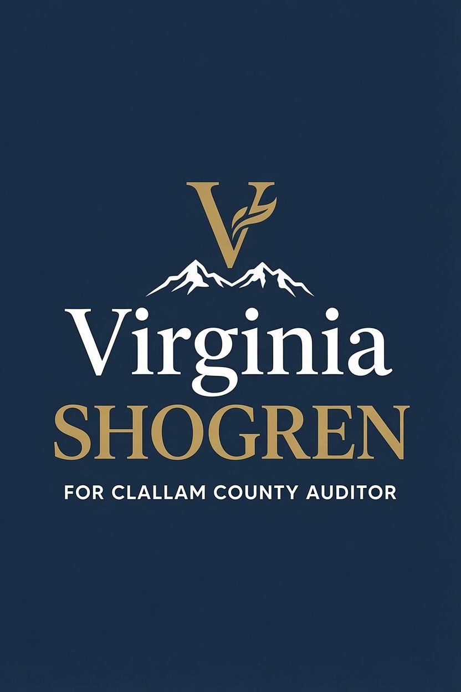

for Clallam County Auditor
Experience • Integrity • Transparency
Join the CampaignAs a former U.S. Patent and Trademark Office Attorney, law firm associate, and principal of her own practice, Virginia has deep experience in detailed legal work, document accuracy, and regulatory compliance.
She holds a Bachelor of Arts and Science Degree with Distinction from Stanford University and a Juris Doctor Degree from the University of Washington School of Law.
Virginia is running for Clallam County Auditor to restore trust in our elections and to make sure your tax dollars are spent wisely.
Every volunteer hour helps bring honest, transparent leadership to Clallam County.
VolunteerPhone: (360) 461-5551
Email: VirginiaShogrenAuditor@gmail.com
Paid for by Virginia Shogren, 961 W. Oak Ct Sequim, WA 98382